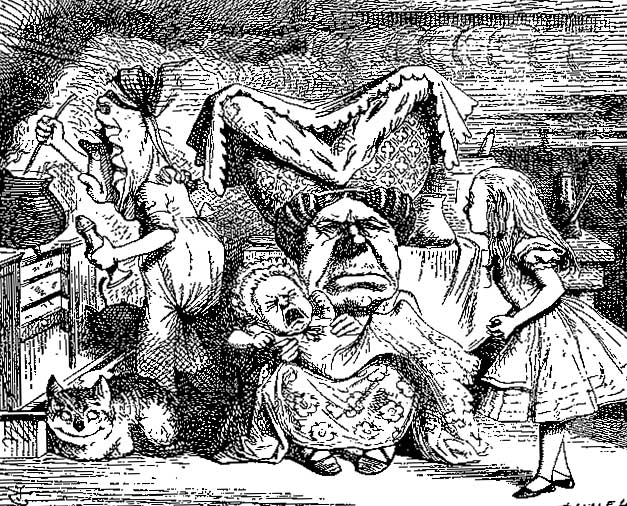

"There's certainly too much pepper in that soup!" Alice said to herself, as well as she could for sneezing.
§ Home § Search § SoupTales § Any comments?
Alice's Pepper Soup
(from Lewis Carroll's Alice's Adventures in Wonderland,
Chapter 6, "Pig and Pepper")
...And she opened the door and went in.

The door led right into a large kitchen, which was full of smoke from one end to the other: the Duchess was sitting on a three-legged stool in the middle, nursing a baby: the cook was leaning over the fire, stirring a large cauldron which seemed to be full of soup.
"There's cerainly too much pepper in that soup!" Alice said to herself, as well as she could for sneezing.
There was certainly too much of it in the air. Even the Duchess sneezed occasionally; and as for the baby, it was sneezing and howling alternately without a moment's pause. The only two creatures in the kitchen, that did not sneeze, were the cook, and a large cat, which was lying on the hearth and grinning from ear to ear.
"Please would you tell me," said Alice, a little timidly, for she was not quite sure whether it was good manners for her to speak first, "why your cat grins like that?"
"It's a Cheshire-Cat," said the Duchess, "and that's why. Pig!"
She said the last word with such sudden violence that Alice quite jumped; but she saw in another moment that it was addressed to the baby, and not to her, so she took courage, and went on again:--
"I didn't know that Cheshire-Cats always grinned; in fact, I didn't know that cats could grin."
"They all can," said the Duchess; "and most of 'em do."
"I didn't know of any that do," Alice said very politiely, feeling quite pleased to have to have got into a conversation.
"You don't know much," said the Duchess; "and that's a fact."
Alice did not at all like the tone of this remark, and thought it would be as well to introduce some other subject of conversation. While she was trying to fix on one, the cook took the cauldron of soup off the fire, and at once set to work throwing everything within her reach at the Duchess and the baby--the fire-irons came first; then followed a shower of sauce-pans, plates, and dishes. The Duchess took no notice of them even when they hit her; and the baby was howling so much already, that it was quite impossible to say whether the blows hurt it or not.
"Oh please mind what you're doing!" cried Alice, jumping up and down in an agony of terror. "Oh, there goes his precious nose!" as an unusually large saucepan flew close by it, and very nearly carried it off.
If everyone minded their own business," the Duchess said, in a hoarse growl, "the world would go round a deal faster than it does."
"Which would not be an advantage," said Alice, who felt very glad to get an opportunity of showing off a little of her knowledge. "Just think what work it would make with the day and night! You see the earth takes twenty-four hours to turn round on its axis......."
"Talking of axes," said the Duchess, "chop off her head!"